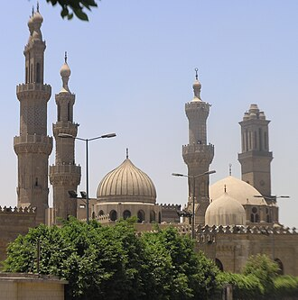

PrésentationتقديمOverview
La mosquée Al-Azhar, fondée en 970, est une des plus anciennes mosquées du Caire et le siège de l'université al-Azhar, la plus ancienne université islamique encore active au monde après Quaraouiyine au Maroc et l'université Zitouna en Tunisie.
الجامع الأزهر هو أهم مساجد مصر على الإطلاق، وأحد المعاقل التاريخية لنشر وتعليم الإسلام كذلك هو واحد من أشهر المساجد الأثرية في مصر والعالم الإسلامي، وجزء من مؤسسة الأزهر الشريف يعود تاريخ بنائه إلى بداية عهد الدولة الفاطمية في مصر، بعدما أتم جوهر الصقلي فتح مصر سنة 969م، وشرع في تأسيس القاهرة قام بإنشاء القصر الكبير وأعده لنزول الخليفة المعز لدين الله، وفي أثناء ذلك بدأ في إنشاء الجامع الأزهر ليصلي فيه الخليفة، وليكون مسجداً جامعاً للمدينة حديثة النشأة أسوة بجامع عمرو في الفسطاط وجامع ابن طولون في القطائع، كذلك أعد وقتها ليكون معهداً تعليمياً لتعليم المذهب الشيعي ونشره، فبدأ في بنائه في جمادي الأول 359هـ/970م، وأتم بناءه وأقيمت أول جمعة فيه في رمضان سنة 361هـ /972م، وعرف بجامع القاهرة ورغم أن يد الإصلاح والترميم توالت عليه على مر العصور فغيرت كثيراً من معالمه الفاطمية إلا أنه يعد أقدم أثر فاطمي قائم بمصر. وقد اختلف المؤرخون في أصل تسمية هذا الجامع، والراجح أن الفاطميين سموه بالأزهر تيمنا
Al-Azhar Mosque, known in Egypt simply as al-Azhar, is a mosque in the historic Islamic core of the city of Cairo, Egypt. Commissioned as the new capital of the Fatimid Caliphate in 970 CE, it was the first mosque established in a city that eventually earned the nickname "the City of a Thousand Minarets". Its name is usually thought to derive from az-Zahrāʾ, a title given to Fatima, the daughter of Muhammad.
El-Ezher Camii, Mısır Kahire'de bir cami. Fâtımî Halifesi Muiz Lidinillah tarafından 970 yılında yeni başkent için yapımı başlatıldı. Caminin isminin, İslam Peygamberi Muhammed'in kızı Fatıma'nın lakabı olan ez-Zehra'dan geldiği düşünülmektedir. Kahire'de kurulmuş ilk camidir ve şehre "bin minareli şehir" unvanının verilmesine sebep olmuştur. Cami, bugün Karaviyyin Üniversitesi'den sonra dünyanın en eski ikinci sürekli üniversitesi olan el-Ezher Üniversitesi'ne doğru yavaş yavaş gelişmiştir.
Masjid Al-Azhar, atau lebih yang dikenal dengan Kompleks Masjid Al-Azhar, adalah sebuah kompleks masjid dan universitas yang berada di kota Kairo, Provinsi Kairo, Mesir. Masjid ini dibangun atas perintah Jawhar al-Siqilli, tak lama setelah Kairo didirikan sebagai ibu kota baru Kekhalifahan Fathimiyah pada tahun 970. Masjid ini merupakan masjid pertama yang didirikan di Kairo. Nama masjid ini biasanya dianggap berasal dari kata az-Zahrāʾ, gelar yang diberikan kepada Fatimah az-Zahra, putri Nabi Muhammad.
Die al-Azhar-Moschee ist eine Moschee im islamischen Stadtkern der ägyptischen Hauptstadt Kairo. Al-Muʿizz li-Dīn Allāh, Kalif der Fatimiden, gab ihren Bau im Jahr 970 für die neue Hauptstadt in Auftrag. Es war die zweite Moschee, die in Kairo errichtet wurde, einer Stadt, die seitdem den Beinamen „Stadt der tausend Minarette“ erhalten hat.
La mezquita de al-Azhar es una de las más importantes del El Cairo (Egipto) desde el punto de vista histórico, religioso y arquitectónico. Forma parte del conjunto conocido como El Cairo Histórico, declarado Patrimonio de la Humanidad por la UNESCO. La mezquita está situada en el centro de la antigua ciudad fatimí y es considerada como la mezquita nacional de Egipto.
La moschea di al-Azhar del Cairo è una delle più note moschee di tutto il mondo islamico.
De Al-Azhar-moskee is onderdeel van een van de meest eerbiedwaardige instituten van Caïro. Het is een onderdeel van de Al-Azhar-universiteit.
爱资哈尔清真大寺 是位於埃及开罗伊斯兰老城的一座清真寺。公元970年，昭海尔委托他人建造这座清真寺，这是開羅的第一座清真寺。該清真寺於972年6月11日啟用。爱资哈尔清真大寺的名字來自於穆罕默德的女儿法蒂瑪的称号“佳丽”。
알아즈하르 모스크(아랍어: الجامع الأزهر, "가장 빛나는 사원")는 이집트 카이로에 위치한 이슬람교의 모스크이다. 970년 파티마 왕조의 칼리프인 무이즈가 건설을 지시했으며 972년에 준공되었다. 카이로에 설립된 최초의 모스크였으며 이후에 "천 개의 미나레트의 도시"라는 별명을 얻었다.
Аль-Азхар — одна из наиболее важных мечетей Египта и одна из наиболее знаменитых в мусульманском мире.
Al-Azhar-moskén är en moské i Islamiska Kairo, staden östra del, i Egypten. Den ligger i närheten av Al-Azharuniversitetet och uppfördes år 970 i den nyetablerade huvudstaden. Namnet tros härstamma från profet Muhammeds dotter Fatimah, en vördad figur i Islam som gavs titeln az-Zahra.
Histoires et récitsقصص ورواياتStories and accounts
Fait historiqueواقعة تاريخيةHistorical factLa mosquée « resplendissante »الجامع «الأزهر»The "resplendent" mosque
En 970, le général Jawhar as-Siqilli, au service du calife fatimide al-Mu'izz venu de Tunisie (Ifriqiya), fonda la nouvelle capitale, Le Caire, et sa grande mosquée. La première prière du vendredi y fut célébrée en juin 972, pendant le Ramadan. Le nom « al-Azhar » veut dire « le resplendissant » ; on le rapproche souvent d'az-Zahra, surnom de Fatima, fille du Prophète ﷺ, dont les Fatimides se réclamaient. Al-Azhar a donc un lien direct avec la Tunisie : ses fondateurs partirent de Mahdia.في سنة 970م أسّس القائد جوهر الصقلّي، في خدمة الخليفة الفاطمي المعزّ لدين الله القادم من إفريقية (تونس)، العاصمةَ الجديدة القاهرة وجامعها الكبير. وأقيمت فيه أول صلاة جمعة في يونيو 972م في شهر رمضان. ومعنى «الأزهر» المشرق المضيء، ويُربط الاسم كثيرًا بلقب «الزهراء» لفاطمة بنت النبي ﷺ التي انتسب إليها الفاطميون. فللأزهر صلة مباشرة بتونس، إذ انطلق مؤسّسوه من المهدية.In 970, General Jawhar as-Siqilli, serving the Fatimid caliph al-Mu'izz who had come from Tunisia (Ifriqiya), founded the new capital, Cairo, and its great mosque. The first Friday prayer was held there in June 972, during Ramadan. The name "al-Azhar" means "the resplendent"; it is often linked to az-Zahra, the title of Fatima, daughter of the Prophet ﷺ, from whom the Fatimids claimed descent. Al-Azhar thus has a direct link with Tunisia: its founders set out from Mahdia.
Source :المصدر:Source: Wikipedia : Al-Azhar Mosque · UNESCO : Historic Cairo
Fait historiqueواقعة تاريخيةHistorical fact35 savants et une école millénaireخمسة وثلاثون عالمًا ومدرسة عمرها ألف عام35 scholars and a thousand-year-old school
En 989, les responsables de la mosquée engagèrent 35 savants pour y enseigner, logés et payés. C'est le début d'une école qui n'a jamais cessé depuis plus de mille ans. Les étudiants s'asseyaient en cercle autour d'un maître, adossé à une colonne. Ils étaient regroupés par pays d'origine dans des « riwaqs » : riwaq des Maghrébins, des Syriens, des Turcs… En 1735, on ajouta même un riwaq pour les étudiants aveugles. Aujourd'hui, l'université al-Azhar accueille des étudiants du monde entier.في سنة 989م عيّن القائمون على الجامع خمسة وثلاثين عالمًا للتدريس فيه، مع السكن والرواتب. وكانت تلك بداية مدرسة لم تنقطع منذ أكثر من ألف سنة. وكان الطلاب يجلسون في حلقات حول شيخ يسند ظهره إلى عمود. وكانوا يُجمعون حسب بلدانهم في «أروقة»: رواق المغاربة والشوام والأتراك وغيرها، بل أضيف سنة 1735م رواق للطلبة المكفوفين. واليوم تستقبل جامعة الأزهر طلابًا من العالم كله.In 989, the mosque's authorities hired 35 scholars to teach there, with lodging and pay. This was the start of a school that has never stopped for more than a thousand years. Students sat in circles around a master leaning against a pillar. They were grouped by country of origin in "riwaqs": the riwaq of the Maghrebis, of the Syrians, of the Turks… In 1735 a riwaq was even added for blind students. Today al-Azhar University welcomes students from all over the world.
Source :المصدر:Source: Wikipedia : Al-Azhar Mosque · Wikipedia : Al-Azhar University
Fait historiqueواقعة تاريخيةHistorical factSaladin ferme la chaire, les Mamelouks la rouvrentصلاح الدين يوقف الخطبة والمماليك يعيدونهاSaladin closes the pulpit, the Mamluks reopen it
Al-Azhar avait été fondée par les Fatimides, de doctrine chiite ismaélienne. Quand Saladin mit fin à leur règne en 1171, il retira à la mosquée son rôle de grande mosquée : son cadi interdit la prière du vendredi, et les étudiants perdirent leurs bourses. La mosquée fut délaissée pendant près d'un siècle. Les sultans mamelouks, à partir de Baybars vers 1266, y rétablirent la prière du vendredi et l'agrandirent. Al-Azhar devint alors le grand centre du savoir sunnite qu'elle est encore.أسّس الفاطميون الأزهر وكانوا على المذهب الشيعي الإسماعيلي. فلما أنهى صلاح الدين حكمهم سنة 1171م نزع عن الجامع مكانته جامعًا للجمعة، إذ منع قاضيه صلاة الجمعة فيه، وقُطعت أرزاق الطلبة. فبقي الجامع مهجورًا قرابة قرن. ثم أعاد سلاطين المماليك، بدءًا من الظاهر بيبرس نحو سنة 1266م، صلاة الجمعة فيه ووسّعوه. فصار الأزهر المركز الكبير للعلم السنّي الذي ما زال عليه.Al-Azhar had been founded by the Fatimids, who followed Ismaili Shia doctrine. When Saladin ended their rule in 1171, he removed the mosque's role as a Friday mosque: his judge banned the Friday prayer there and students lost their stipends. The mosque was neglected for nearly a century. The Mamluk sultans, beginning with Baybars around 1266, restored the Friday prayer and enlarged it. Al-Azhar then became the great centre of Sunni learning it still is.
Source :المصدر:Source: Wikipedia : Al-Azhar Mosque
Fait historiqueواقعة تاريخيةHistorical factAl-Azhar face à Bonaparteالأزهر في وجه بونابرتAl-Azhar against Bonaparte
En 1798, Bonaparte occupa l'Égypte et voulut gagner les savants d'al-Azhar : il forma un conseil de neuf cheikhs pour administrer Le Caire et leur demanda, sans succès, une fatwa en sa faveur. Le 21 octobre 1798, une révolte contre les troupes françaises partit d'al-Azhar ; l'armée la réprima et des cavaliers entrèrent dans la mosquée. En 1800, le général Kléber fut tué par Sulayman al-Halabi, un étudiant venu d'Alep qui logeait à al-Azhar. Les Français fermèrent alors la mosquée, qui ne rouvrit qu'après leur départ en 1801.في سنة 1798 احتلّ بونابرت مصر وأراد استمالة علماء الأزهر، فشكّل ديوانًا من تسعة مشايخ لإدارة القاهرة، وطلب منهم فتوى لصالحه فلم يُجيبوه. وفي 21 أكتوبر 1798 انطلقت من الأزهر ثورة على الجنود الفرنسيين، فقمعها الجيش ودخل فرسانه الجامع. وفي سنة 1800 قُتل الجنرال كليبر على يد سليمان الحلبي، وهو طالب من حلب كان يقيم في الأزهر. فأغلق الفرنسيون الجامع، ولم يُفتح إلا بعد رحيلهم سنة 1801.In 1798, Bonaparte occupied Egypt and tried to win over the scholars of al-Azhar: he set up a council of nine sheikhs to run Cairo and asked them, in vain, for a fatwa in his favour. On 21 October 1798, a revolt against the French troops started from al-Azhar; the army crushed it and horsemen entered the mosque. In 1800, General Kléber was killed by Sulayman al-Halabi, a student from Aleppo who lodged at al-Azhar. The French then closed the mosque, which reopened only after their departure in 1801.
Source :المصدر:Source: Wikipedia : Al-Azhar Mosque · Wikipedia : Suleiman al-Halabi
Toutes les histoires des mosquéesكل قصص المساجدAll the stories of the mosques →
Sur la carteعلى الخريطةOn the map
Documents et liensوثائق وروابطDocuments and links
- Wikipédia — Français
- Wikipédia — العربية
- Wikipédia — English
- Wikipédia — Türkçe
- Wikipédia — Bahasa Indonesia
- Wikipédia — اردو
- Wikipédia — Deutsch
- Wikipédia — Español
- Wikipédia — Italiano
- Wikipédia — Português
- Wikipédia — Nederlands
- Wikipédia — 中文
- Wikipédia — 한국어
- Wikipédia — Русский
- Wikipédia — Svenska
- Wikidata — Q312342
Données : Wikidata (CC0), mises à jour tous les 3 mois. L'année est la plus ancienne date de construction connue du bâtiment : pour un édifice devenu mosquée plus tard (comme Sainte-Sophie), c'est celle du bâtiment d'origine. Photos : Wikimedia Commons, auteur et licence sur la page de chaque photo.البيانات: ويكي بيانات (CC0)، تُحدَّث كل 3 أشهر. السنة هي أقدم تاريخ معروف لبناء المبنى: فإن صار مسجدًا لاحقًا (مثل آيا صوفيا) فهي سنة المبنى الأصلي. الصور: ويكيميديا كومنز، المؤلف والرخصة في صفحة كل صورة.Data: Wikidata (CC0), updated every 3 months. The year is the earliest known construction date of the building: for a building that became a mosque later (such as Hagia Sophia), it is that of the original building. Photos: Wikimedia Commons, author and licence on each photo's page.
Grandes mosquées du mondeالجوامع الكبرى في العالمGreat mosques of the world →